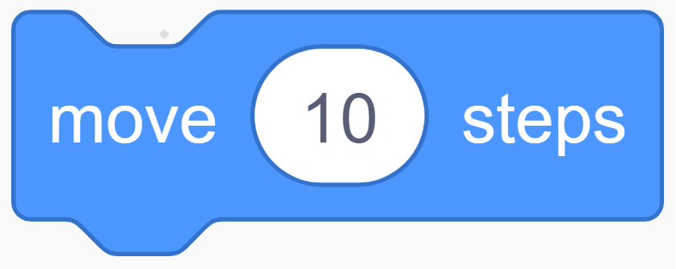
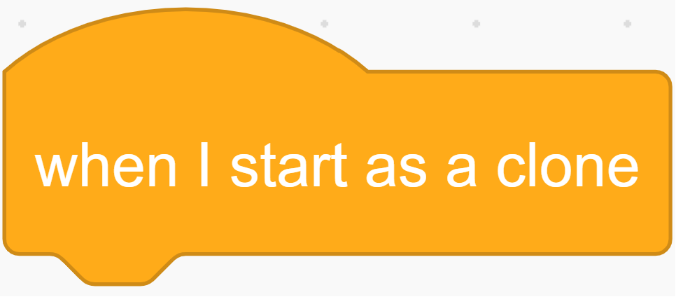
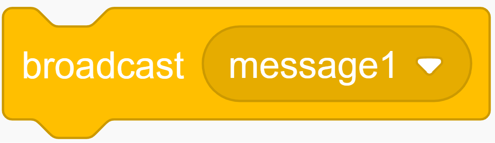
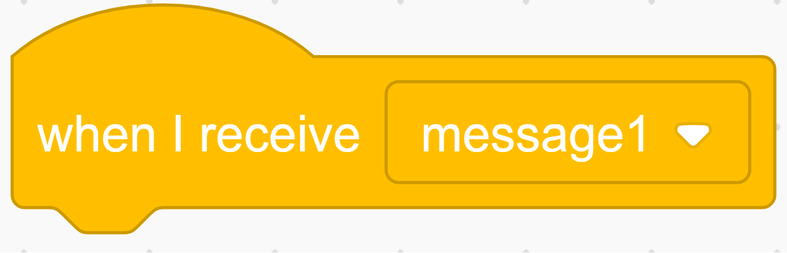
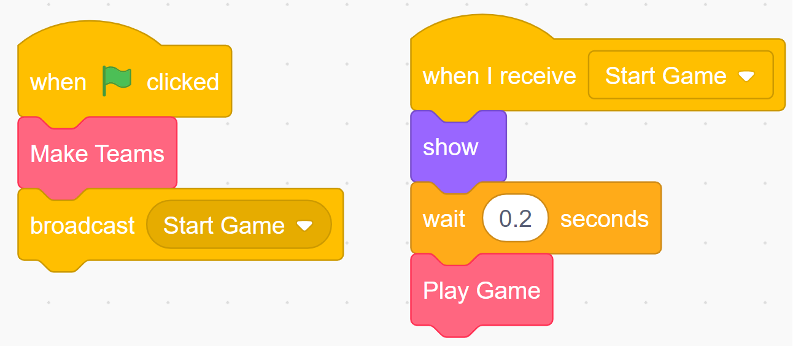
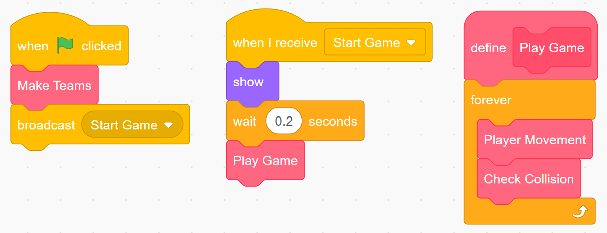

Rock Paper Scissors Tournament: Abstraction Activity
For our abstraction activity, we will be working on a project in Scratch. Scratch is a high level, free to use block-based programming language created with javascript. As a block based programming language, it already utilizes a large degree of abstraction. For example, each Scratch project consists of one or more "Sprites", each of which have their own space for the programmer to add code. Each individuak "Block" of code is an abstraction of the javascript code that carries out the function. For example, the  block tells the "Sprite" to move a certain number of steps. Simple, right? Well, looking deeper, the "move" block is an abstraction of several lines of javascript code that remove the image of the sprite from the screen, and replaces it in the new location. Those Javascript lines are themselves abstractions of the base machine language that computers run on into something easier for humans to read and understand.
For this project, will be creating a sort of rock-papper-scissors battle royal, in which a set number of rock, papper, and scissor sprites "battle" eachother, and the loser becomes the winning type. The winner will be determined by traditional rock-papper-scissors rules, thus rock cruches scissors, scissors cut paper, and paper covers rock. Bellow, I have a working example so you know what you are working towards:
This project will be divided into two parts: to create a working project, and to use abstraction
to make the code as simple and easy to understand as possible. A sample code has been provided for you
to work on here:
Phase 1: Encapsulation
As you can see, while several "clones" of the origional sprite are created, only the origional is moving. While we can just copy/paste the first sprite and remove the clone generation to have a working game, that is both wasteful of space, and hard to edit. After all, if you made a mistake, you would have to fix it 15 times, and if you missed one, you would have to hunt through all of them to find it. Thus, abstraction. Having all of the code in one class (sprite) with multiple instances of itself (clones) instead of duplicating the code many times for the same effect is an example of Encapsulation.
Your first step will be to have the generated clones move themselves. For this, scratch already provides this with the handy block . The "When I start as a clone" block is one of several control blocks. Control blocks sense when a condition is met, such as if the start button is pressed or if the current instance just started as a clone, and immediately executes all the code connected to it. For you to use it, simply navigate to the control blocks on the left hand side and drag the "When I start as a clone" block into the code section. From there, drag the forever block and its contents from its origional location to the WISAAC block. The forever block is exactly what it sounds like: it will execute the code inside of it forever, untill it is fored to stop with the end button.
Once you have done this, it should behave similar to this:
Now, if you are paying attention, you will notice three major errors with how the code is currently functioning:
- Clones do not wait for the others to generate before starting.
- The origional sprite does not move.
- With the origional sprite, there are 31 players instead of the intended 30 (10 per team).
To correct these, there are a few things you can do. First, use the "hide" block in the looks section before the clones are generated. Then, instead of the "When I start as clone" block, instad use a combinstion of the  block, which sends out a signal to all sprites (including clones), and the  block, which is a control block that starts when it gets that signal. Finally, add a "show" block, found in the same location as the hide block, at the beginning of the code under the receive block, to make all active clones visible.
Because the origional sprite was the one to send the broadcast, it will not trigger the recieve block itself, only the clones. Once you are finished, the project should function similarly to the working example shown at the beginning of this page. If you feel that it starts too abrubtly, feel free to add a small waight block right after the show block. Regardless, congradulations, you have completed the Encapsulation portion of this project!
Phase 2: Procedural Abstraction
By this point, your code should loke somewhat similar to this:Now, while the code does work at this point, it takes a bit of effort to understand, and it is not as clean as it could be. This is where procedural abstraction comes in. In other words, we will be creating our own functions (blocks). To create a block, all you need to do is to navigate to the "My Blocks" section of the block choices and click on "Make a Block". To dictate what that block does, you simply connect code to it in a similar fashion as you would do for control blocks. First, I want you to create two new blocks: "Make Teams" and "Play Game", such that you are able to reduce your main code to something like this:

If you have correctly defined the blocks by moving the relevent code to each, it should be similar to this:
While this is better, it can still be simplified a good deal. For the final two steps, I would like for you to:
1: Simplify the "play game" block to a single for loop containing two newly created blocks, "Player Movement" and "Check Collision".
2: Reduce the "Check Collision" block to a single if statement.
Hint1: Use the Use the "next costume" block in place of the "switch costume" block.
Hint2: Use a combination of the "and" and "or" operatiors to acheive a single if statement.
Once you complete this, you have successfully used procedural abstraction to simplify your origional bulky code into:

With the totality of the code looking like this:
Congradulations! You have completed the abstraction activity. Looking at your new code, it should be fairly clear that it is easier to understand, and thus modify/fix, than the origional code. It also has the benefit of reusability of the defined methods. Now, before you leave, look back at the code. Notice How the movement speed, turning radius, and turn sizes are all defined by variables instead of being hard coded as integers? This is another form of abstraction. It allows for centralized management of the code. For some extra fun, I have implmented an interface (another form of abstraction) that will allow you to play around with the variables "Team Size", "Turning Radius", and "Speed" with a slider so that you can see the benefits of using variables in this manner.